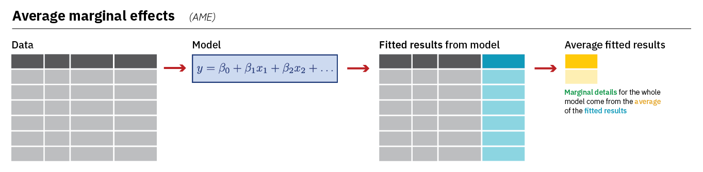
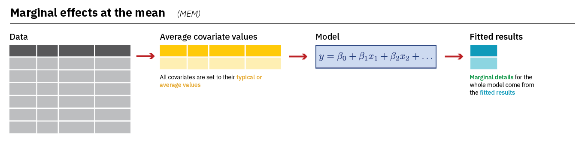

#Packages
library(rio) #loading data
library(tidyverse) #data manipulation and plotting
library(marginaleffects) #calculating marginal effects & predictions
#Data
ESS9NL <- import("ESS9e03, Netherlands.sav")10 Marginal Effects
In the last chapter we examined how to fit a logistic regression model. The coefficients of that model tell us how the log of the odds that Y = 1 change when the predictor variable changes by one unit. This is not a very intuitive way of understanding how much Y is expected to change when X changes. We introduce an alternative statistic in this chapter that is better suited for this purpose: estimates of the “marginal effects” of our predictor variables that tell how the average change in the probability that Y = 1 given a one unit change in X (\(\frac{dy}{dx}\)). We will use commands from the marginaleffects package for this purpose.
Here are the packages that we will use along with our data:
10.1 Data Preparation, Example Model, and an Issue with factorize()
We will examine the same model that we ended last chapter on - one where we predicted whether a survey respondent said that they had voted in the most recent election based on their gender, age, trust in politicians, and ideology. Here are the data management steps we took last chapter to prepare our data for analysis as well as our model:
#Data Preparation
ESS9NL <- ESS9NL |>
#Factorize our IVs
mutate(gndr = factorize(gndr),
vote = factorize(vote)) |>
#Remove Not Eligible to Vote Category from vote
mutate(vote = na_if(vote,"Not eligible to vote")) |>
#Relevel our variables like we did last time
mutate(vote = relevel(vote, "No"),
gndr = relevel(gndr, "Female"))
#Our model
Vote_model_mp <- glm(vote ~ gndr + agea + trstplt + lrscale,
data = ESS9NL, family = "binomial")
#Check the output
summary(Vote_model_mp)- 1
-
We could combine these three
mutate()commands into one singlemutate()command if we wanted, but we keep them separate here to more clearly lay out the steps that we are taking.
Call:
glm(formula = vote ~ gndr + agea + trstplt + lrscale, family = "binomial",
data = ESS9NL)
Deviance Residuals:
Min 1Q Median 3Q Max
-2.3923 0.4100 0.5029 0.5905 1.0239
Coefficients:
Estimate Std. Error z value Pr(>|z|)
(Intercept) -0.284194 0.380455 -0.747 0.455
gndrMale 0.043281 0.154201 0.281 0.779
agea 0.018349 0.004503 4.075 4.61e-05 ***
trstplt 0.195020 0.038706 5.039 4.69e-07 ***
lrscale 0.029257 0.039306 0.744 0.457
---
Signif. codes: 0 '***' 0.001 '**' 0.01 '*' 0.05 '.' 0.1 ' ' 1
(Dispersion parameter for binomial family taken to be 1)
Null deviance: 1173.9 on 1424 degrees of freedom
Residual deviance: 1135.3 on 1420 degrees of freedom
(248 observations deleted due to missingness)
AIC: 1145.3
Number of Fisher Scoring iterations: 4We need to take one additional step before calculating the marginal effects in this particular example due to a quirk in the factorize() command. Let us take a look at our gndr variable again:
levels(ESS9NL$gndr)[1] "Female" "Male" "No answer"table(ESS9NL$gndr)
Female Male No answer
840 833 0 There are three labels/levels on the gndr variable: “Female”, “Male”, and “No Answer”. However, 0 respondents fall under the “No Answer” category. In situations like these, the command we will use below to obtain our marginal effects estimate will return an error because it thinks there is a third category (“No Answer”) in the model but finds zero observations in it.
One way we can preempt this error is by using the droplevels() command to remove the empty category from our gndr variable as shown below. Another way is to use factor() to create the factorized version of gndr. Section A.4 in the Common Errors Appendix for a more thorough discussion of this issue.
#Drop levels: will drop any category with 0 observations associated with it
ESS9NL <- ESS9NL |>
mutate(gndr = droplevels(gndr))
#Let's take a look at our work
levels(ESS9NL$gndr)[1] "Female" "Male" table(ESS9NL$gndr)
Female Male
840 833 10.2 Average Marginal Effects (AME)
The first type of marginal effect we’ll calculate is the Average Marginal Effect (AME) using the avg_slopes() command from the marginaleffects library. The AME shows us the average change in the probability that Y = 1 when a predictor increases by one unit. avg_slopes() does this by first calculating a predicted probability for each observation in the model based on the model’s coefficients and the observation’s unique combination of values on the predictor variables before averaging those predictions together and finding the difference. Here is an image that summarize this process (image from Heiss (2022)):
Heiss, Andrew. 2022. “Marginalia: A Guide to Figuring Out What the Heck Marginal Effects, Marginal Slopes, Average Marginal Effects, Marginal Effects at the Mean, and All These Other Marginal Things Are.” May 20, 2022. https://doi.org/10.59350/40xaj-4e562.

Let us take a look at the AMEs from our model:
#Run the model and store the results
AME <- avg_slopes(Vote_model_mp,
conf_level = 0.95)Here is how you can read this syntax:
AME <- avg_slopes(Vote_model_mp,-
Performs the function
avg_slopeson the specified model in brackets. Results are stored in a new data object (AME). conf_level = 0.95)-
The default confidence level used is 95%, so this code could be left out if this is the desired confidence level. To use a different confidence level, the indicated value can be changed.
Here are the results:
tibble(AME)- 1
-
We could just type
AMErather thantibble(AME)here. The default output would look a little different (e.g,. it’d show “Estimate” rather than “estimate” and “2.5%” rather than “conf.low”). We usetibble()so you see the underlying dataset. See the Warning in Chapter 5.
# A tibble: 4 × 9
term contrast estimate std.error statistic p.value s.value conf.low conf.high
<chr> <chr> <dbl> <dbl> <dbl> <dbl> <dbl> <dbl> <dbl>
1 agea dY/dX 0.00220 0.000538 4.08 4.47e-5 14.4 0.00114 0.00325
2 gndr Male - … 0.00518 0.0185 0.281 7.79e-1 0.360 -0.0310 0.0414
3 lrsc… dY/dX 0.00350 0.00470 0.744 4.57e-1 1.13 -0.00572 0.0127
4 trst… dY/dX 0.0233 0.00460 5.07 3.92e-7 21.3 0.0143 0.0323
Output Explanation
term: This lists the variable name (e.g.,agea,gndr, etc.).contrast: This indicates the comparison being made. You may see two values: (1) “dY/dX”, which indicates that the variable is a continuous variable or (2) the specific categories being compared will be listed for factor variables (e.g., “Male - Female”)estimate: The AMEstd.errorthroughconf.high: Information about the uncertainty surrounding this estimate.
Interpretation
The AME tells us the average change in the probability that Y = 1 when the predictor increases by one unit. The AME is natively reported on a 0-1 probability scale. We can discuss percentage point changes by multiplying the AME estimate by 100. For instance:
- The probability of voting among male respondents is 0.5 percentage points greater, on average, than the probability of voting among female respondents
- The probability of voting is expected to increase by 2.3 percentage points, on average, with each one unit increase on the trust in politicians measure (
trstplt)
10.3 Marginal Effects at the Mean (MEM)
We recommend using the AME when discussing the marginal effects of variables in a logistic regression. However, it is also quite common to see researchers report what we might call the “marginal effect at the mean” or MEM. The main difference is that the MEM for a variable (lrscale, for instance) is calculated while holding the other variables in the model constant at their mean or mode. Here is an image summarizing how avg_slopes() calculates the MEM:

We can calculate the MEM with a small change to our syntax;
MEM <- slopes(Vote_model_mp,
conf_level = 0.95,
newdata = datagrid()
)newdata = datagrid()-
Creates a new dataset for our calculation with all variables held at their mean or mode (for categorical variables).
Let’s take a look:
tibble(MEM)# A tibble: 4 × 18
rowid term contrast estimate std.error statistic p.value s.value conf.low
<int> <chr> <chr> <dbl> <dbl> <dbl> <dbl> <dbl> <dbl>
1 1 agea dY/dX 0.00210 0.000519 4.06 4.94e-5 14.3 0.00109
2 1 gndr Male - Fe… 0.00504 0.0180 0.281 7.79e-1 0.360 -0.0302
3 1 lrscale dY/dX 0.00336 0.00453 0.741 4.59e-1 1.12 -0.00552
4 1 trstplt dY/dX 0.0224 0.00446 5.02 5.19e-7 20.9 0.0136
# ℹ 9 more variables: conf.high <dbl>, predicted_lo <dbl>, predicted_hi <dbl>,
# predicted <dbl>, gndr <fct>, agea <dbl>, trstplt <dbl>, lrscale <dbl>,
# vote <fct>The output is very similar to what we saw above (e.g., term provides the variable name, estimate provides the marginal effect, etc.) although the MEM dataset also stores the mean and modal values of the predictors that were used when calculating the different MEM estimates.
MEM |>
select(gndr, agea, trstplt, lrscale) |>
as_tibble()# A tibble: 4 × 4
gndr agea trstplt lrscale
<fct> <dbl> <dbl> <dbl>
1 Male 50.7 5.34 5.15
2 Male 50.7 5.34 5.15
3 Male 50.7 5.34 5.15
4 Male 50.7 5.34 5.15
Interpretation
The interpretation of MEMs is very similar to the interpretation of the AME: they tell us how the probability that Y = 1 is expected to change given a one unit change in X. We can express this on a percentage point scale by multiplying by 100. However, we should make note that we held the control variables constant in our discussions. For instance: Male respondents were .2 percentage points more likely to vote, on average, than female respondents holding age, ideology, and trust in politicians constant at their means.